security-lab
Primary namespace for the workload, human users, and the application ServiceAccount.
- Nginx deployment · 3 replicas
- developer
- auditor
- app-reader ServiceAccount
- Pod Security baseline
- NetworkPolicy deny-nginx-ingress
Security case study
A local Minikube lab that separates who you are from what you are allowed to do. The captured authorization run is 15 passed and 0 failed.
A hands-on Kubernetes security lab demonstrating X.509 authentication, least-privilege RBAC, namespace isolation, ServiceAccounts, Pod Security Admission, Calico NetworkPolicy enforcement, Kubernetes audit logging, automated authorization testing, and RBAC permission analysis.
For Cloud Security, Security Engineering, DevSecOps, Platform Security, and Kubernetes Security roles.
Project overview
Keyshawn Jeannot built this as a local security learning and portfolio lab on Minikube. It is not a production environment. No lab identity is granted unrestricted cluster-admin.
The lab stacks controls so a single grant, a bad pod spec, or an open network path is not the only line of defense. Each layer answers a different question.
Architecture
The workload is a three-replica Nginx Deployment in security-lab. production exists so namespace scope can be tested. security-admin is the only cluster-scoped lab identity, and it is limited to pod reads.
Minikube cluster
Primary namespace for the workload, human users, and the application ServiceAccount.
Isolation boundary. developer and app-reader are denied here. security-admin can list pods.
security-admin uses a read-only ClusterRole: get, list, and watch pods. Delete, Secrets, and cluster-admin stay denied.
Access model
Permissions are explicit. A successful authentication still needs a Role, RoleBinding, or ClusterRoleBinding before the API allows the verb.
| Identity | Scope | Allowed | Denied |
|---|---|---|---|
| developer | security-lab | Pod operations and deployment management | Production and Secrets |
| auditor | security-lab | Read-only pod access | Writes, deployments, production, Secrets |
| security-admin | Cluster-wide pod reads | get, list, and watch pods | Delete pods, Secrets, cluster-admin |
| app-reader | security-lab | get, list, and watch pods | Pod writes, Secrets, production |
Security controls
Human users present client certificates. The developer certificate subject is CN=developer, issued by minikubeCA.
Namespace Roles and a read-only ClusterRole grant only the verbs each identity needs.
developer can work in security-lab and is denied when listing pods in production.
No lab identity receives cluster-admin. security-admin cannot delete pods or read Secrets.
app-reader can read pods in security-lab and cannot write pods, read Secrets, or reach production.
security-lab enforces the baseline Pod Security Standard and blocks a privileged container.
An ingress policy selects the Nginx pods. The same request that returned HTTP 200 later times out.
Metadata-level audit records the identity, resource, response code, and allow or forbid decision.
scripts/test-rbac.sh runs 15 kubectl auth can-i checks. The captured run passed 15 and failed 0.
The scanner lists who can delete pods in security-lab, including the developer RoleBinding.
Security testing
These are terminal captures from the repository. Select a capture to open it full size. The figures below are the runs recorded in screenshots/.
Automated authorization
scripts/test-rbac.sh compared expected and actual kubectl auth can-i results for developer, auditor, and security-admin. This run reports Passed: 15 and Failed: 0.
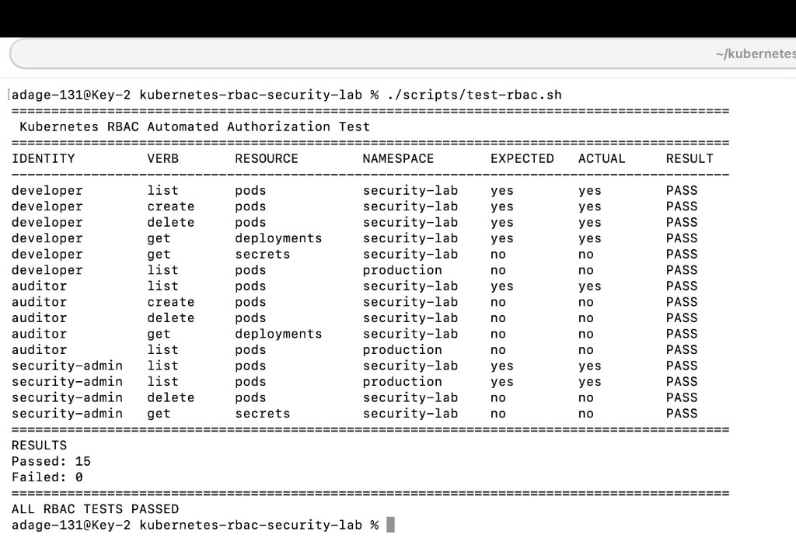
Workload identity
As system:serviceaccount:security-lab:app-reader, list pods in security-lab is yes. Create pods, get Secrets, and list pods in production are no.
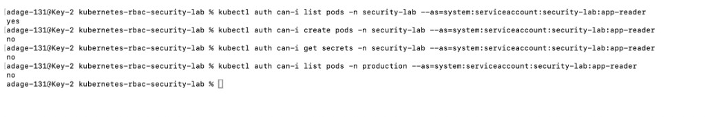
Misconfiguration · before
Before the insecure Role is applied, kubectl auth can-i get secrets for app-reader returns no.
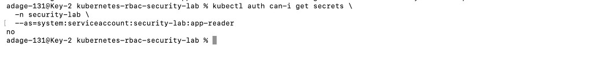
Misconfiguration · expanded
After misconfigurations/app-reader-secret-access.yaml is applied, the same check returns yes.
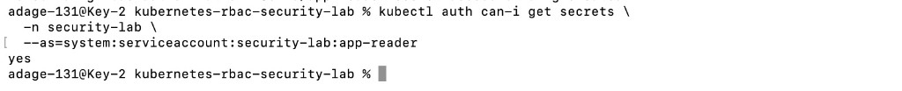
Misconfiguration · remediated
After that Role and RoleBinding are removed, get secrets for app-reader returns no again.
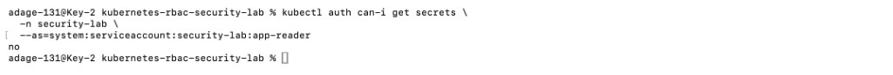
Pod Security Admission
kubectl apply of misconfigurations/privileged-pod.yaml is Forbidden. The pod violates PodSecurity baseline:latest because the nginx container sets privileged to true.
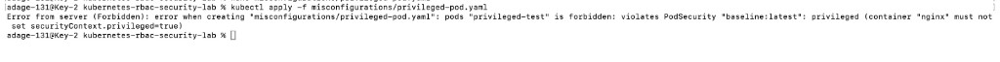
NetworkPolicy · before
From the network-test pod, a request to the Nginx workload returns HTTP/1.1 200 OK.
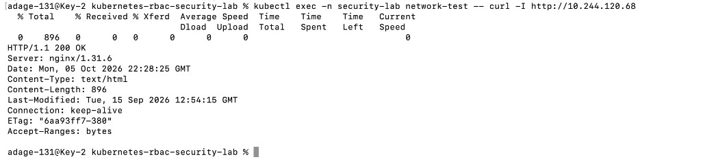
NetworkPolicy · after
After deny-nginx-ingress is applied, that request hits the connect timeout and curl exits 28.
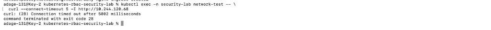
Audit · allow
The auditor lists pods and receives HTTP 200. The Metadata audit event records resource pods and decision allow.
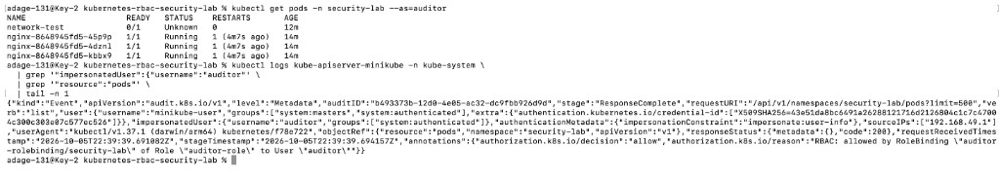
Audit · forbid
The auditor’s list of Secrets is Forbidden. The audit event records resource secrets, code 403, and decision forbid.
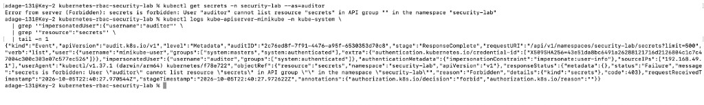
Permission analysis
kubectl who-can delete pods -n security-lab lists the developer RoleBinding. Cluster system identities that can delete pods are listed as well.
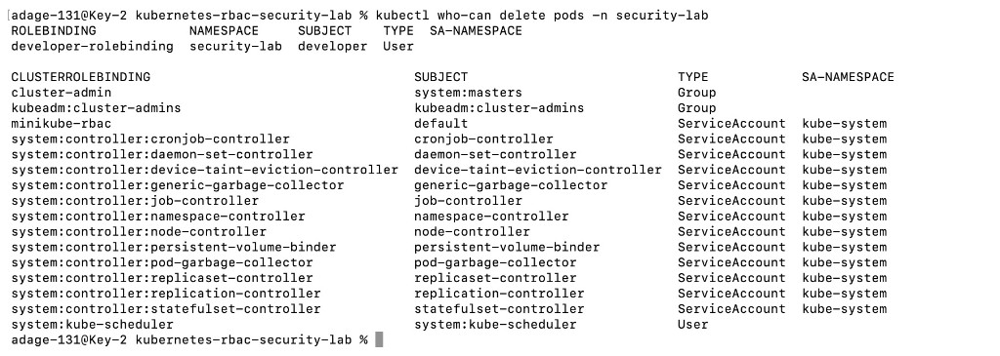
Featured security scenarios
Scenario 1
A small RBAC edit was enough to expand a read-only workload identity. Removing that grant put the boundary back.
Scenario 2
RBAC never saw this packet. The policy is the control that stops pod-to-pod traffic.
Scenario 3
Audit logging is Metadata level, so the record keeps the identity, verb, resource, and decision without storing request or response bodies.
Automated validation
scripts/test-rbac.sh runs kubectl auth can-i for developer, auditor, and security-admin. Each check compares the actual answer with the expected allow or deny across pods, deployments, Secrets, and both namespaces.
That 15 and 0 result is the local run captured in the test matrix.
GitHub Actions security validation is defined in .github/workflows/security-checks.yml. On push and pull request to main it checks Bash syntax, runs ShellCheck on the lab scripts, and lints the YAML under manifests, misconfigurations, audit, and the workflow directory. This page does not report a live Actions result.
Security lessons
Tools